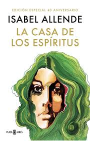
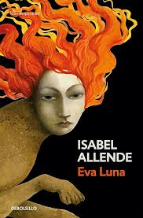
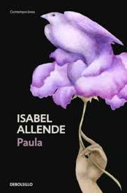
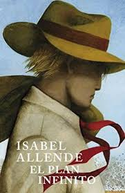
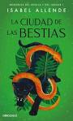
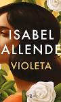

Isabel Allende
Isabel Allende nacida en 1942 es una escritora chilena conocida por su estilo único que fusiona el realismo mágico con el drama histórico. Su obra aborda temas como la política, el feminismo y las desigualdades sociales. Su primer libro, *La casa de los espíritus*, catapultó su carrera y la consolidó como una de las voces más importantes de la literatura latinoamericana.
Galería de Obras

La casa de los espíritus

Eva Luna

Paula

El plan infinito
Inés del alma mía
La isla bajo el mar

La ciudad de las bestias

Violeta
Hija de la fortuna